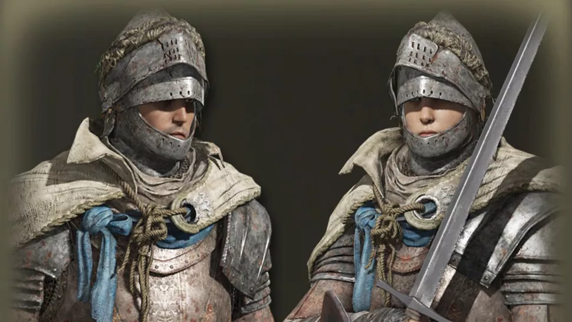
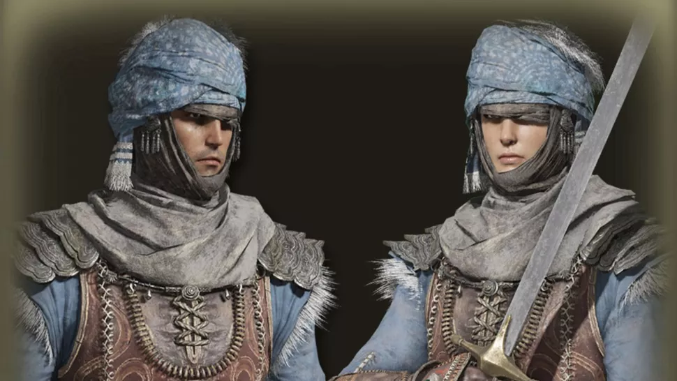
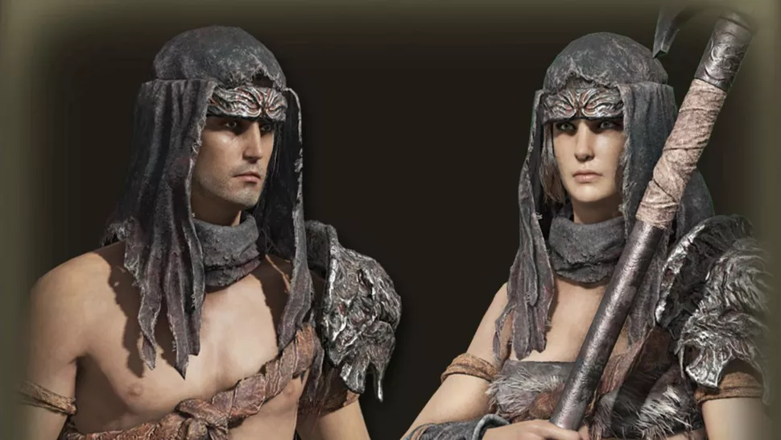
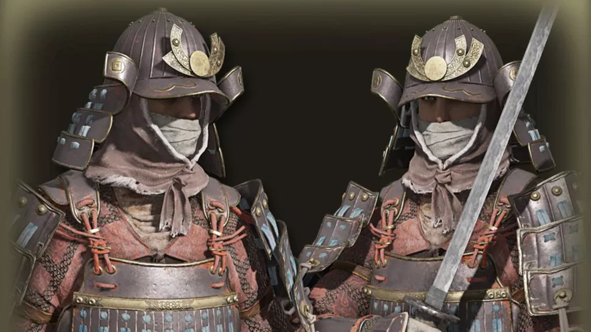
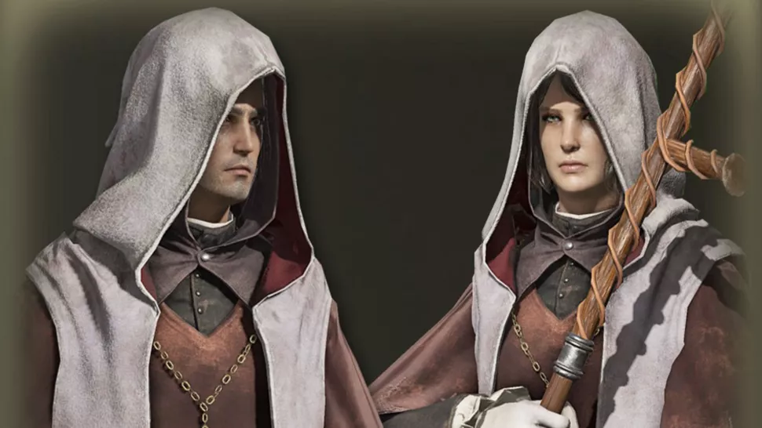
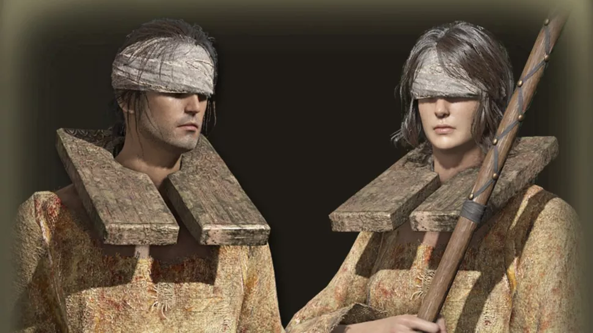
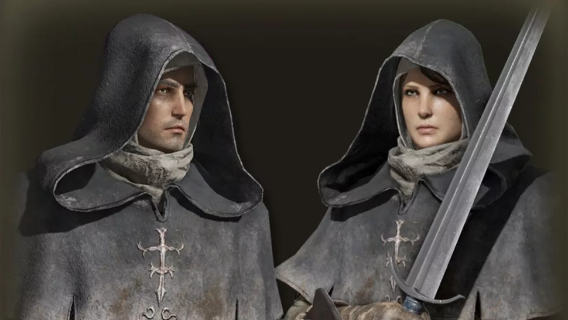
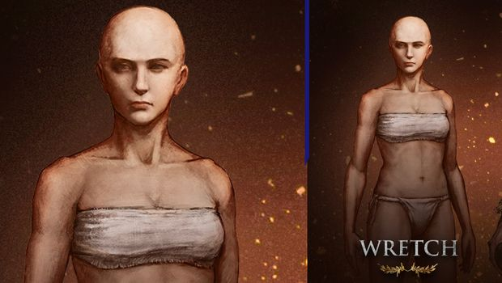

All Playable Classes
The main factor that seperates different classes from one another is amount of points in certain attributes they have
These different attributes are:
Vigor: points into this attribute increase max HP/Health points, Poison Immuninity and Fire Resistance
Mind: points into this attribute increase max FP/Focus Points. Focus Points are used to cast spells. This attribute also increases any Focus-related resistances
Endurance: points into this attribute increase max Stamina Levels, Physical Defense Power, your Equipment Load and your character's Robustness/resistance to frostbite and hemorrhage etc.
Strength: points into this attribute increase overall attack power for strength scaling weapons and the ability to wear heavy armour
Dexterity: points into this attribute increases max Attack Power of Dexterity scaling weapons, lowers your Fall Damage, reduces Casting Time and the chance of being dismounted from your horse
Intelligence: points into this increaases attack power of Magic-scaling weapons and improves Magical Resistance. A certain level of intelligence is needed to cast Glintstone Sorceries
Faith: a certain level of faith is needed to use Holy and Fire-based spells and incantations, points into this also increase magical damage of Faith scaling spells
Arcane: points into this attribute increases Death Resistance and certain Spell Resistances. This attribute also determines overall Item Discovery
Vagabond

Starting Weapons: Longsword, Halberd, Heater Shield
Starting Armour: Vagabond Knight's Armour Set
Starting Magic: N/A
Description: The Vagabond class is a typical sword and shield class, with it's starting attributes you will have a larger health bar and will be able to wield heavier swords and shields
Warrior

Starting Weapons: 2x Scimitar, Riveted Wooden Shield
Starting Armour: Swordsman Armor Set
Starting Magic: N/A
Description: The Warrior class is a more agile class. This class has high dexterity which allows it to dual wield sword. The class also comes with a shield which allows you to parry oncoming attacks
Hero

Starting Weapons: Battle Axe, Large Leather Shield
Starting Armour: Hero Armour Set
Starting Magic: N/A
Description: The Hero class is a glass-cannon, it can do large amounts of damage but cannot take many hits, meaning that you will have to rely on your dodges
Bandit
Starting Weapons: Great Knife, Buckler, ShortBow
Starting Armour: Bandit Set
Starting Magic: N/A
Description: The Bandit class is good at sneaking behind enemies and getting critical backstabs. This class heavily relies on dodging. It has attributes in the arcance attribute meaning it can use magic early on
Samurai

Starting Weapons: Uchigatana, Longbow, Fire Arrows, Arrows
Starting Armour: Land of Reeds Armour Set
Starting Magic: N/A
Description: The Samurai Class is a class that can change from close range katana attacks to longer ranged sweeping attacks. The katana also comes with bleed damage, which can deal large amounts of damage over time
Astrologer

Starting Weapons: Astrologer's Staff, Short Sword, Scripture Wooden Shield
Starting Armour: Astrologer's Set
Starting Magic: Glintsone Pebble, Glintstone Arc
Description: The Astrologer Class is a glass cannon that uses spells to do high damage, however will die in a few hits. For this class you will need to heavily rely on dodging and blocking
Prophet

Starting Weapons: Short Spear, Finger Seal, Rickety Shield
Starting Armour: Prophet Armor Set
Starting Magic: Heal, Catch Flame
Description: The Prophet Class is similar to the astrologer class except it uses incantations and, to use incantations you need faith points.
Prisoner
Starting Weapons: Glintstone Staff, Estoc, Rift Shield
Starting Armour: Prisoner Attire
Starting Magic: Magic Glintblade
Description: The Prisoner Class allows you to use both melee and magical attacks, this class also allows you to easily switch to different types of weapons.
Confessor

Starting Weapons: Broadsword, Finger Seal, Blue Crest Heater Shield
Starting Armour: Confessor Armour Set
Starting Magic: Assassin's Approach, Urgent Heal
Description: The Confessor Class is a good class for those who don't know what type of playstyle to go for. This class allows you to use incantations while also allowing you to lean towards playing like a rogue or a holy knight etc.
Wretch

Starting Weapons: Club
Starting Armour: N/A
Starting Magic: N/A
Description: The Wretch Class is a class for those who want a challenge and want to start the game with perfectly balanced attributes. The wretch has a 10 in every attribute allwoing the player to build their own class from the ground up